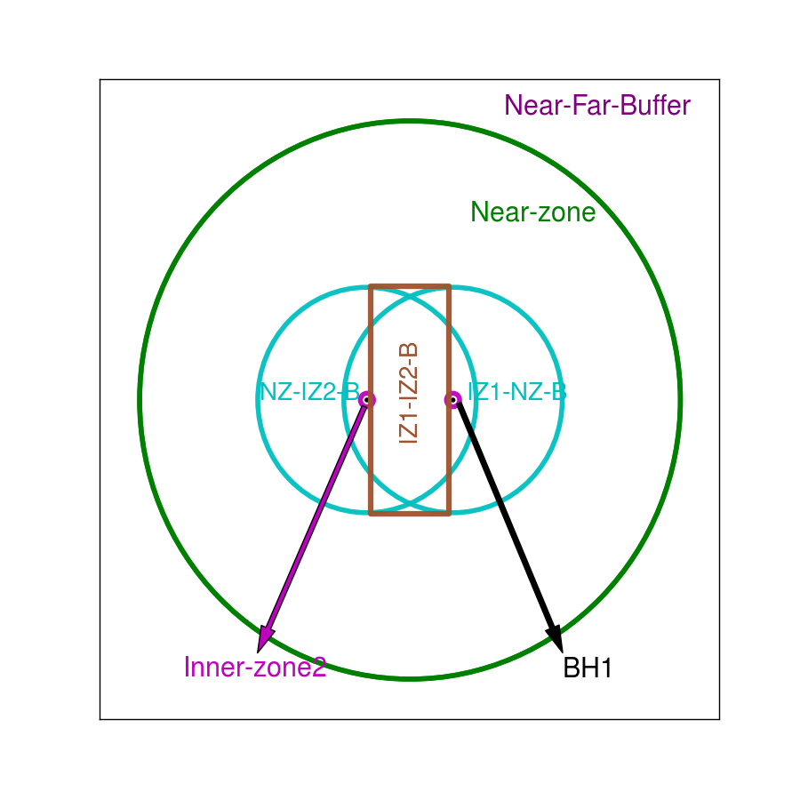
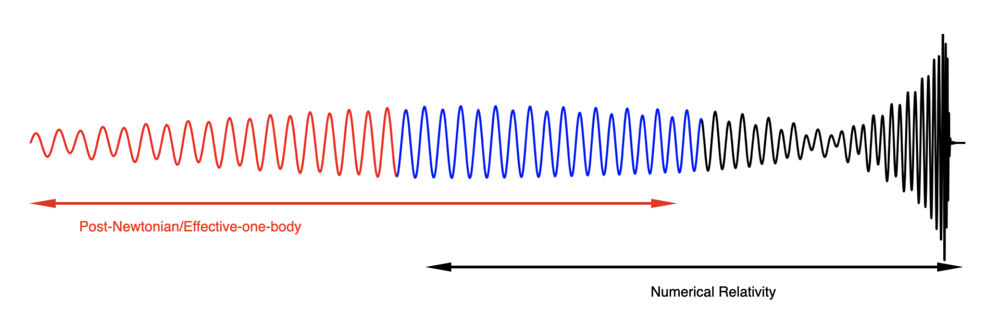
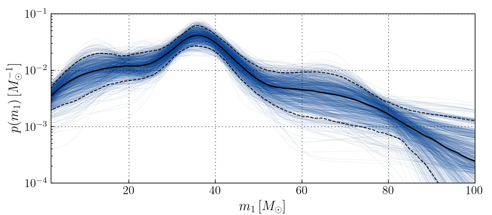

Testing accuracy of an analytical spacetime of binary black holes by comparing it with numerical spacetime

An analytical spacetime is constructed using black hole perturbation theory, post Newtonian and post Minkowsian approximation which are patched together using the technique of asymptotic matching.
Hybridyzing Waveforms for Precessing Black hole Binaries

Using model and numerical waveform to construct hybrid of a precessing black hole binary system
AwKDE for Population Inferences of Primary Mass of Binary Black hole Systems using Observed Gravitational Wave Data

AwKDE using primary mass of observed GWs from O1 O2 and O3a observing runs.